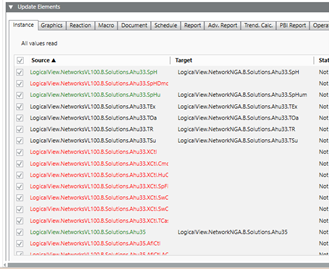
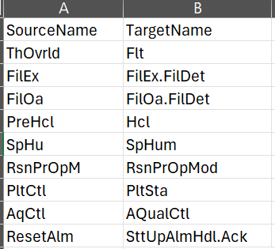
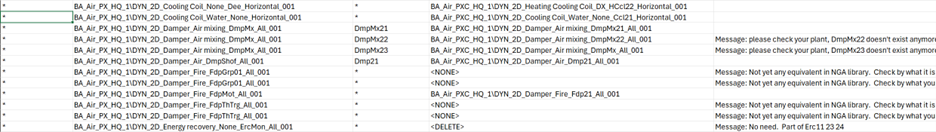
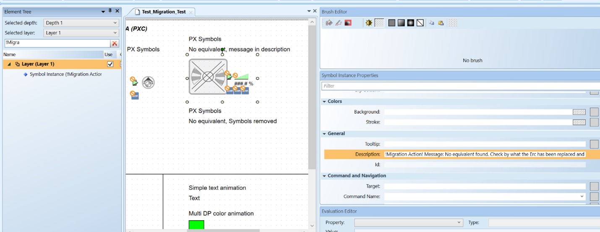
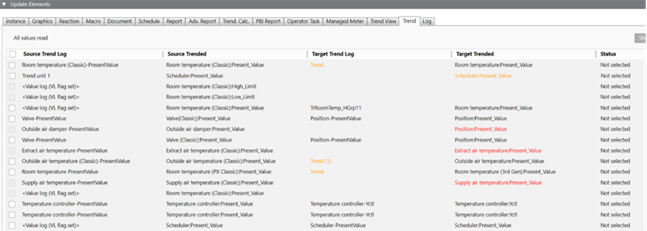

Migration Sections
This topic discusses the contents of each tab in Update Elements panel
Instance Settings Tab
Each row in the Instance tab represents a point discovered in the .csv migration file. Points can be found in the column for the Source device, the Target device, or both:

Additional Mapping File
The color of the text in the source and target columns helps you to understand the change that will take place during migration. In some cases the system will automatically discover the correct mapping between your source and target column.
If the mapping discovered in your .csv file is blank or incorrect, you can help the system learn the correct association between source and target with an additional mapping file.
For example, you may know that a virtual object has changed (for example, all SpHu are now SpHum), and those changes are not included in the .csv file.
To add a mapping in advance, change the ObjectNameMap.csv located at: C:\GMSProjects\YourCCPeoject\libraries\Global_DataMigration_HQ_1\ConversionTables

Text Color Coding
Red text in the source column indicates that no equivalent point was found on the target device. If this occurs, it is possible to correct the migration tool so that it finds the correct point. Switch to Logical View and find the point on the target device that corresponds to the source. Drag the point into the target column for the correct point to set the mapping for the migration.
Green text indicates a point that is found in your current installation but not in the .csv instance file. Examples in this area might include an intermediate hierarchy or virtual point: for example, an equipment setpoint.
Graphics Tab
On the graphics page, a symbol design for the source may not be useful for the target system. To address this, there is another mapping file in \libraries that allows you to designate new symbols for use by the target. Extend the file with your entry. If there are any conflicts, this will override the mappings in the default .csv migration file.
File Location
C:\GMSProjects\YourCCPeoject\libraries\Global_DataMigration_HQ_1\ConversionTables
Filename
SymbolMap.csv
Example of the file format:

See a description of the fields (columns) in the graphics tab below:
Column 1: Source Function
The function name in the source instance for the symbol
Column 2: Source Symbols
Symbol names associated with the source instance datapoint. This will be replaced by the target symbol in column 4.
Column 3: Target Function name
The function name in the target instance for the symbol
Column 4: Target Symbols name
Symbol names associated with the target instance datapoint. This name will replace the source symbol name.
If there is no equivalent in target, you can add <NONE> to take no action or <DELETE> if the source symbol has no equivalent and can be removed.
Column 5: Message text
Add a message visible by the user after the migration.
The message will appear in the log file or the symbol description. Messages are intended to prompt further user action to finalize the migration.
For example, in the element tree, enter !Migration in the filter. This could give you a list of symbols that need action and a message in the General Description.

Log Tab
The Log tab allows you to migrate the entire log history in a single run. In this case, the system will search the instance list to find log history entries that should be migrated. If you do a second run migration run, no entries will be changed. This protects the log data and avoids replacing the history with an empty history.
A second section allows you to migrate other log definitions that you created in your project.
Trend Tab
Like points, trends require you to select both a source and target point to trend, along with an equivalent Trend Log object. If the migration tool has not automatically obtained these fields from the .csv file, this status is indicated by the text color.

See a description of the fields (columns) in this trend tab below:
Source Trend Log
This can be a Trend Object (offline Trend) or an Online Trend Log (a TLO_ object).
If the Trend has no online or offline trend object and has the VL flag enabled, it appears in list and displays <Value log (VL Flag set)>.
Source Trended
Designates the trended object. If the system found an Offline Trend object with no Trended object, or one that is out of scope (a device not imported), this field can be empty.
Target Trend Log
The associate Trend object (Online or offline) for the target trended object. If the system does not find an online or offline Trend object, this can be empty.
If the target trended is associated with both an offline trend and an online trend or it has the VL Flag enabled, the office trend is chosen and displayed in orange.
Target Trended
This is the trended target object associated with the source trended object (via the Instance list). If this no object found, it will be empty, and history data is not migrated.
The following additional conditions and rules apply:
If an object is found and:
- The object has a trend (online or offline) associated (displayed in black): history data are migrated
- The object has no trend associated, but the target trended has the VL flag set, (displayed in orange): history data are migrated, but the user needs to D&D in the trend view definition (and create the TLO) to see it.
- The object has no trend associated, and the target trended has no VL flag set, (displayed in red): history data are not migrated, and the user can set the VL Flag before doing migration to migrate history data.